Многоточечная навигация и избегание препятствий Navigation2
1. Содержание урока
Примечание: для этого урока необходимо предварительно изучить урок [Navigation2 Single-Point Navigation and Obstacle Avoidance] и иметь базовое понимание навигации Navigation2.
Изучение функции многоточечной навигации по путевым точкам (Waypoint) и избегания препятствий Navigation2 на роботе.
2. Подготовка
2.1 Описание содержания
В этом уроке в качестве примера используется Jetson Orin NX. Для плат Raspberry Pi и Jetson Nano необходимо открыть терминал и ввести команду для входа в Docker-контейнер. После входа в контейнер вводите команды этого урока уже внутри него. Инструкции по входу в Docker-контейнер см. в руководстве к изделию [Configuration and Operation Guide] — [Entering the Docker] (для пользователей Jetson Nano и Raspberry Pi 5, см. соответствующий раздел). Для плат Orin и NX достаточно просто открыть терминал и ввести команды этого урока.
2.2 Запуск агента
Примечание: перед тестированием всех примеров необходимо сначала запустить агента в Docker. Если он уже запущен, повторно запускать его не нужно.
Введите команду в терминале робота:
sh start_agent.sh
Терминал выведет следующее сообщение, означающее успешное подключение.
3. Запуск примера
3.1 Многоточечная навигация
Обратите внимание:
- Для контроллеров серии Jetson Nano и Raspberry Pi необходимо сначала войти в Docker-контейнер (порядок действий см. в разделе [Docker Course Section — Entering the Robot's Docker Container]).
- Для этого раздела требуется как минимум одна готовая карта. Обратитесь к любому из уроков картографирования, например Gmapping-SLAM Mapping, Cartographer Mapping или SLAM-Toolbox Mapping.
Чтобы запустить нижнеуровневые датчики в терминале робота:
ros2 launch M3Pro_navigation base_bringup.launch.py
Чтобы снова запустить навигацию:
ros2 launch M3Pro_navigation navigation2.launch.py
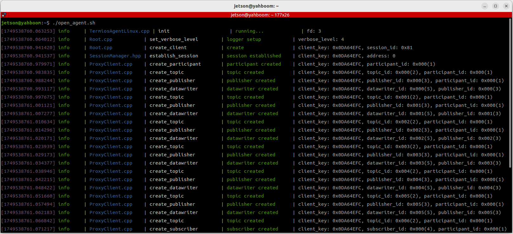
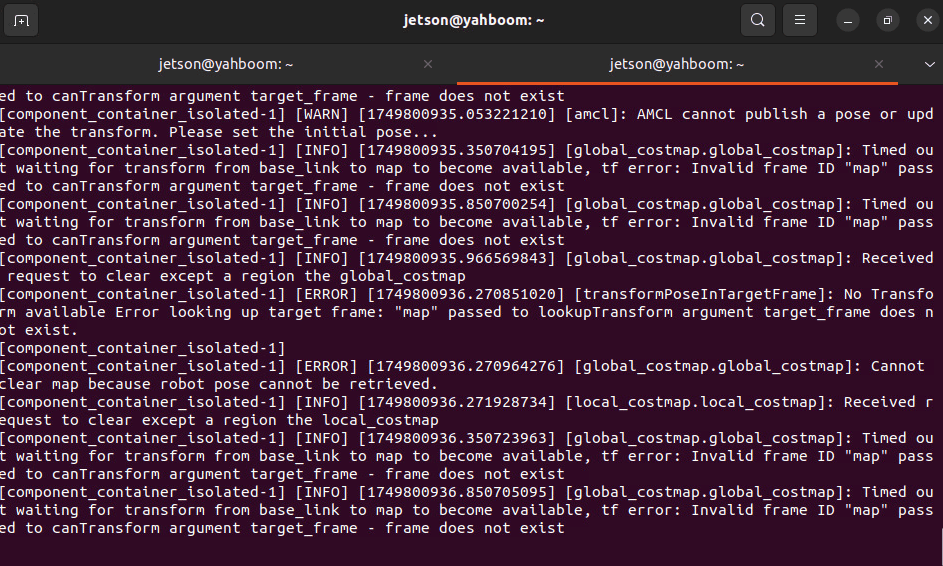
Функцию визуализации rviz можно запустить как в терминале робота, так и на виртуальной машине. Выберите один из способов. Не запускайте её одновременно на виртуальной машине и в терминале робота:
Например, на виртуальной машине откройте терминал и запустите интерфейс визуализации rviz:
ros2 launch slam_view nav_rviz.launch.py
Команда запуска интерфейса визуализации Rviz на роботе:
ros2 launch M3Pro_navigation nav_rviz.launch.py
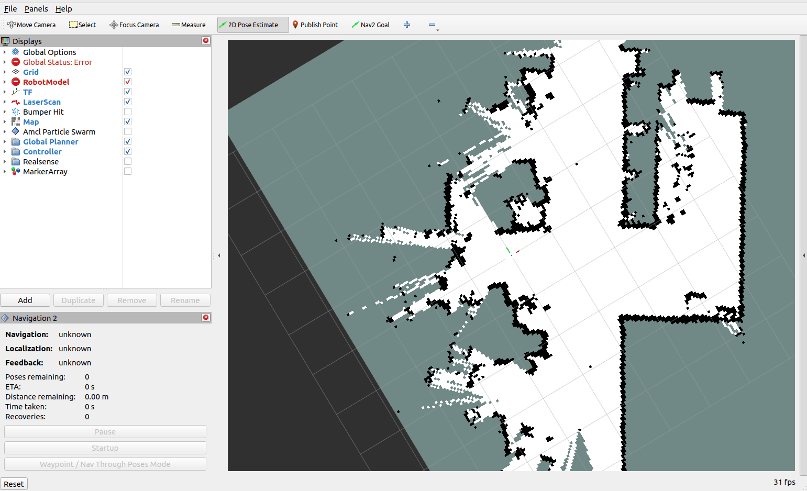
Теперь вы увидите загрузку карты. Нажмите [2D Pose Estimate], чтобы задать начальное положение робота. Исходя из фактического положения робота в пространстве, щёлкните и перетащите мышью в Rviz, чтобы переместить модель робота в заданное положение. Как показано на рисунке ниже, если область сканирования лидара примерно совпадает с реальным препятствием, положение задано верно.
После завершения инициализации положения в интерфейсе rviz появятся модель робота и красное 2D-облако точек лидара.
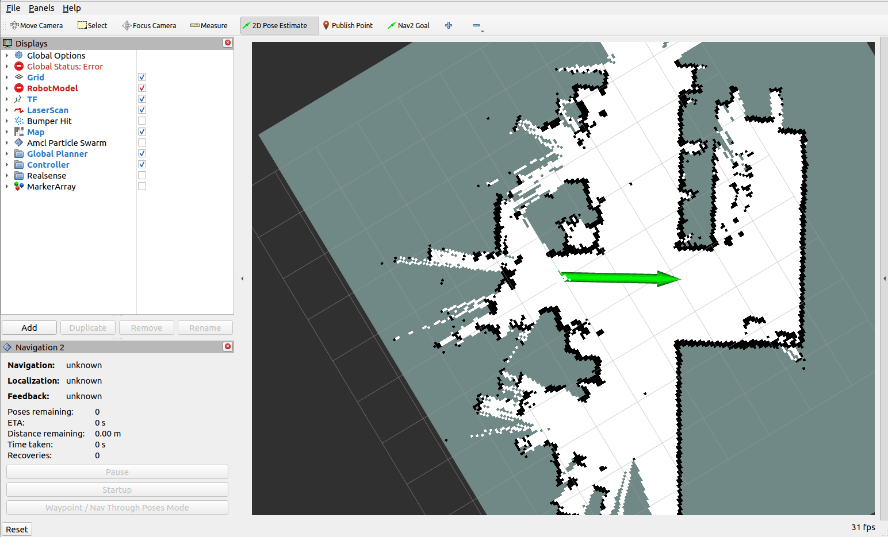
Нажмите [Waypoint/Nav Through Pose Mode] в левом нижнем углу, чтобы перейти в режим многоточечной навигации.
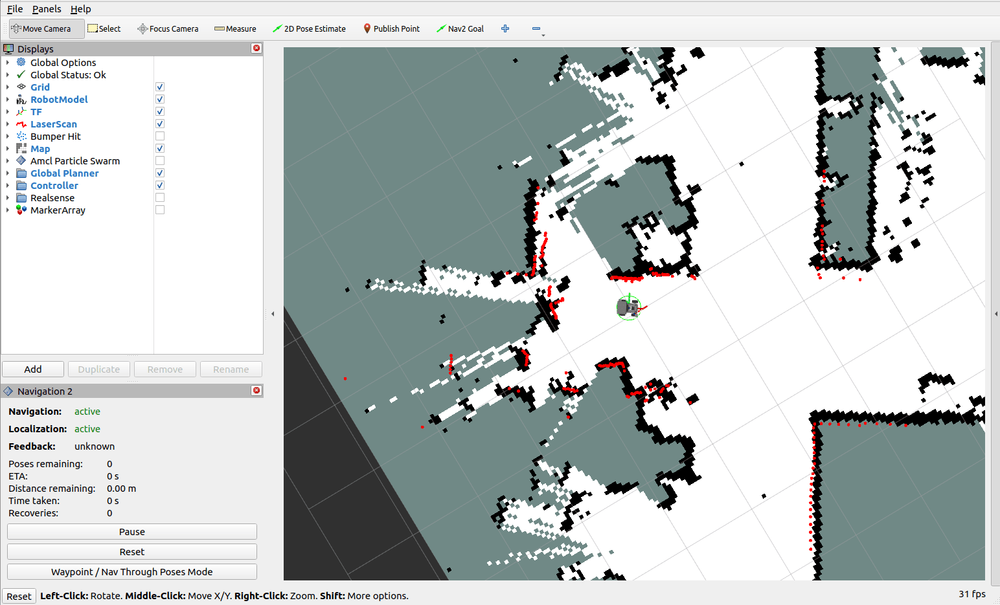
Нажмите MarkerArray на левой панели опций, чтобы включить отображение путевых точек, затем нажмите Nav2 Goal: с помощью мыши отметьте на карте несколько целевых точек.
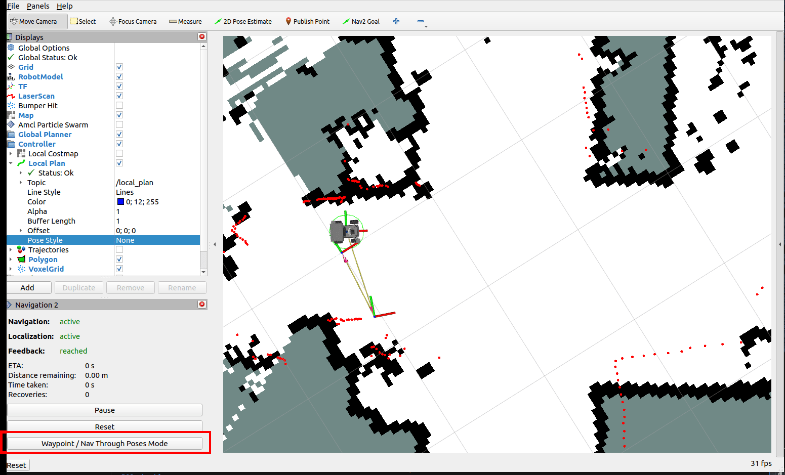
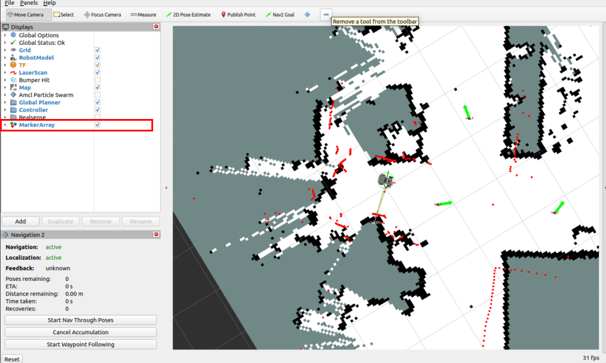
Нажмите Start Waypoint Following в левом нижнем углу, чтобы начать многоточечную навигацию.
Робот последовательно перемещается по отмеченным точкам.
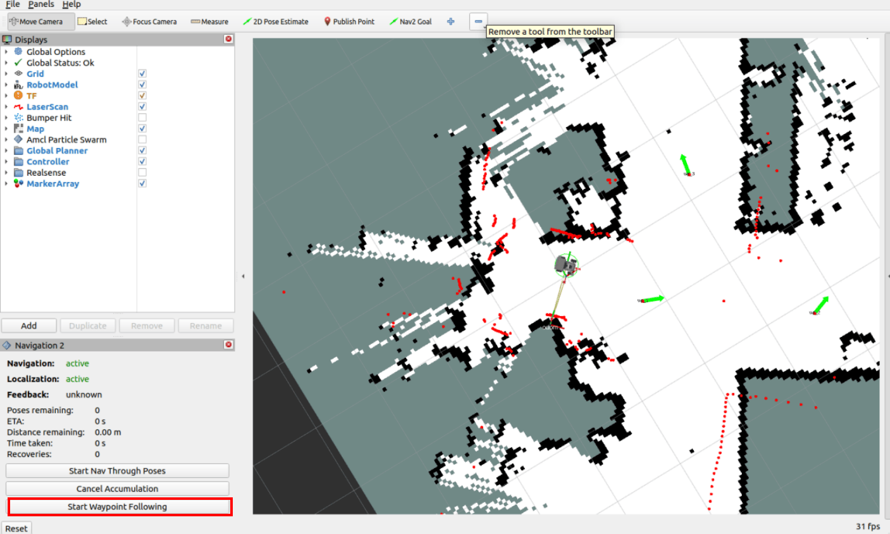
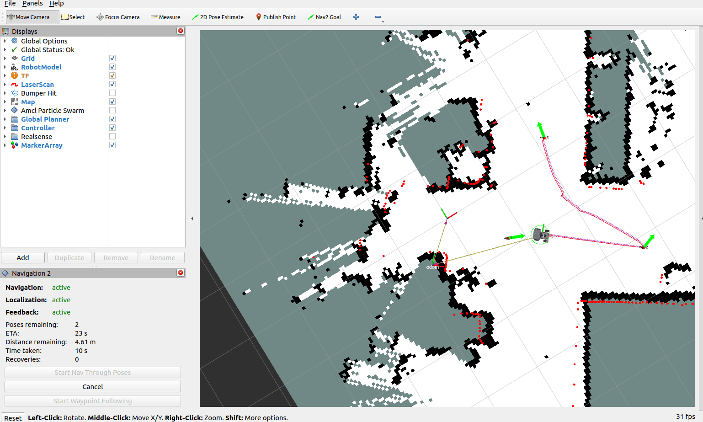
4. Анализ принципа работы
4.1 Данные путевых точек (Waypoint)
После входа в режим многоточечной навигации через [Waypoint/Nav Through Pose Mode] информация об отмеченных пользователем точках публикуется в топик /waypoints (плагин навигации по путевым точкам в rviz добавляет дополнительные промежуточные точки между целевыми путевыми точками для сглаживания пути). Эти данные о путевых точках можно посмотреть через интерфейс RQT.
Команда запуска в терминале виртуальной машины:
ros2 run rqt_graph rqt_graph
В интерфейсе rqt виден топик /waypoints. После включения его отображения можно наблюдать данные топика (сначала нужно включить отображение топика, а затем опубликовать путевые точки в интерфейсе rviz). Путевые точки, отмеченные вручную в rviz, публикуются именно в этот топик.
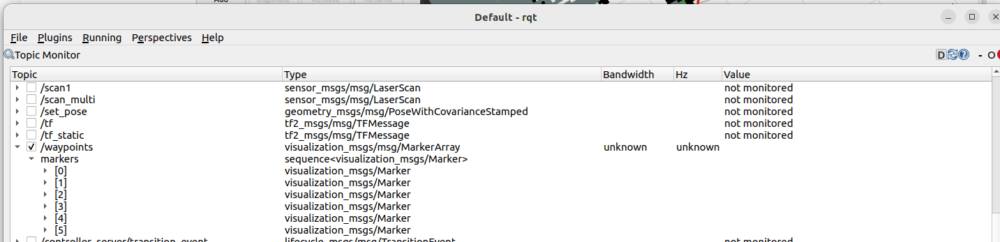
Нажмите на путевую точку, чтобы посмотреть её данные. Здесь в качестве примера рассмотрим точку [0], где pose — это координатные данные.
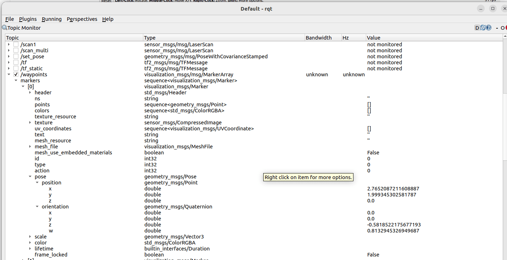
4.2 Выполнение передачи данных
После задания координат путевых точек нажмите Start Waypoint Following, и плагин rviz упакует последовательность координат путевых точек в запрос действия FollowWaypoints и отправит его серверу действий /follow_waypoint для последовательного выполнения всех путевых точек.
Откройте терминал на виртуальной машине и введите следующую команду:
ros2 run rqt_graph rqt_graph
На графе взаимодействия узлов виден сервер действий /follow_waypoint. Этот сервер действий принимает последовательность путевых точек и выполняет навигацию по ним последовательно.
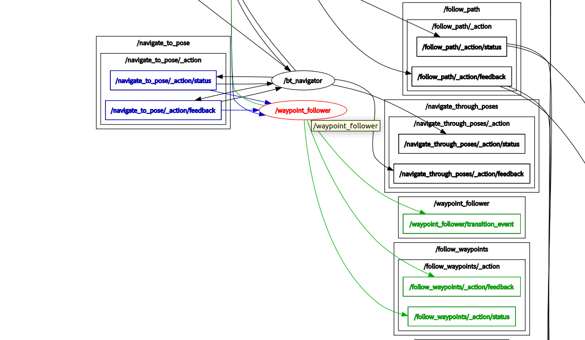